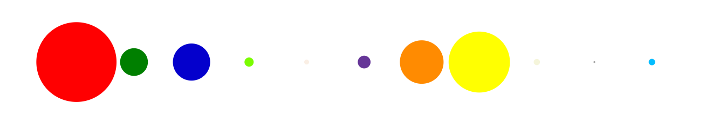

Sabrina Lakhdhir
Developer & Artist
Implementation: Presentation
Winter 2019
University of Calgary Undergraduate Enrolment
The next part of this project required an implementation of the information visualization. Before beginning to code,
I created a mockup on Photoshop of what I would like my final presentation to look like. Please find it below:

Variation 1
My first attempt at implementing this visualization was to create a presentation which shows a comparison of the sizes of different faculties.
I kept this one simple & used a simple circle to represent each faculty, ensuring that colour was used to differentiate between them.

Check it out here
Variation 2
In my second variation, my goal was to replace the circles with a silhouette headshot of a graduate. However, due to a time limitation
and an unforeseen lack of knowledge, I was not able to successfully implement this variation for this hand-in deadline.
 Check it out here
Check it out here
Variation 3
My third variation follows suit of my second, and is somewhat an extension on it, thus, due to being unable to complete the second variation, I was also
unable to complete this one.
In my third variation, I was hoping to switch out the simple graduate silhouette for a silhouette of either a male graduate or a female graduate, dependant on enrolment numbers by
gender in that faculty. I think this would be an interesting variation as it is something small and subtle, yet provides the viewer with an additional piece of information
at first sight - that piece of information being which gender "rules" the faculty.
 Check it out here
Check it out here